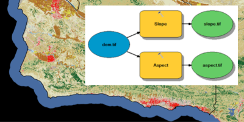
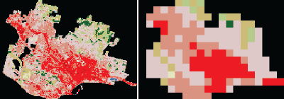
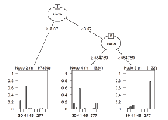
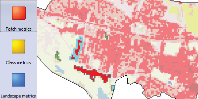
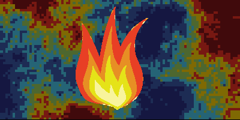
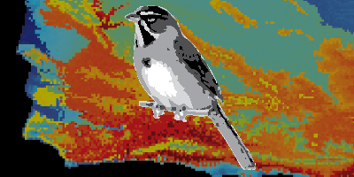
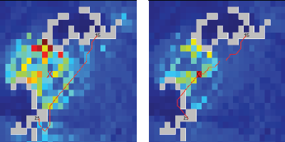
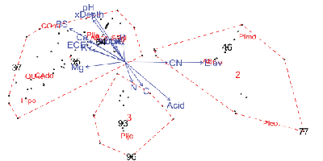
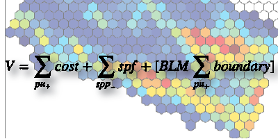

These Landscape Ecology labs were taught winter quarter 2015 at the Bren School, UCSB. Originally posted in a private online courseware GauchoSpace. Quickly posting this content for NEON spatio-temporal data hackathon.
For an overview of the course, see the syllabus.
Used Rmarkdown to weave instructions with data preparation for various external software and post-process outputs into tables and visualizations.
Instructions. Per lab (eg lab2), download lab*.zip and extract. It will extract to a folder with the same name (eg lab2_scale.zip to folder lab2_scale). Download the other lab files, especially lab*.html and lab*.Rmd, into this same extracted folder. You can most easily read the instructions in lab*.html. Except for the first lab, you will edit the lab*.Rmd in RStudio and run code to prepare the data and process outputs.
Introduction: Touring Landcover using ArcGIS

Scale: Quantifying Landcover Changes in Time and Space using R

Agents: Physical Controls on Vegetation using ArcGIS

Metrics: Measuring edge effects in the landscape using FragStats

Disturbance: Simulating fire regimes on forests using LANDIS

Species: Species distribution modeling using Maxent

Connectivity: Connectivity modeling using Circuitscape

Communities: Quantifying species diversity using Vegan in R

Planning: Conservation planning using Marxan
